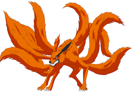
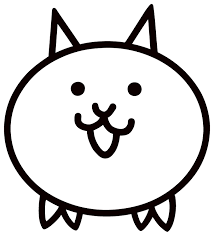
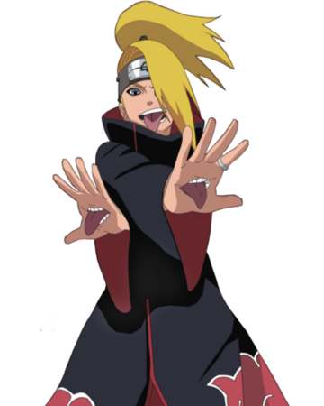

Thumbspanel

This is the tailed beast from naruto. It lives insie the charcter sealed away. Ths seal makes the main charcterm, Naruto, a jinchuriki.
This cat is from a mobile game called BattleCats. They're a starter caracter that is used as a basic unit and as spam.
A character from naruto who uses bomb attacks that he calls "art". He's a part of the akatsuki who wear cloaks whith red cloud symbols on them.